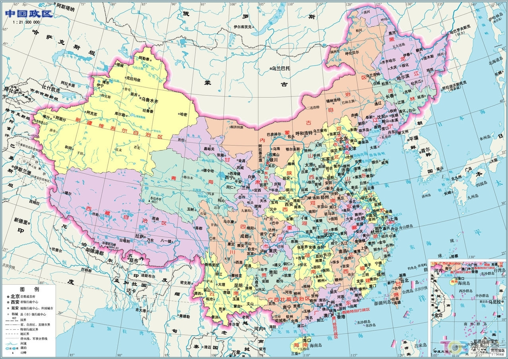
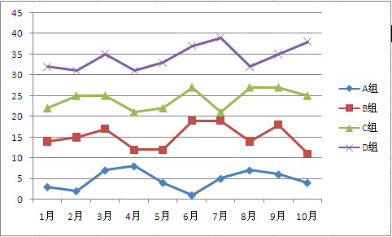
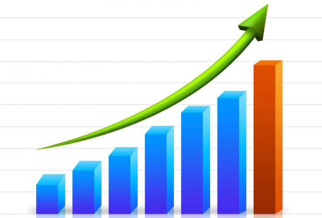
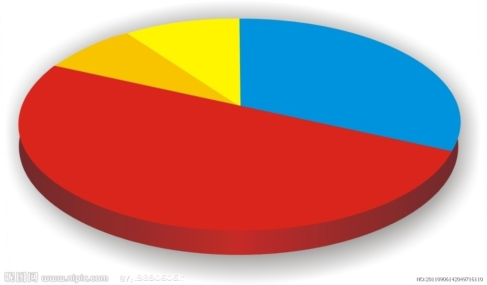
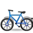

今年上半年，广州提出投1.2亿助推公共单车升级。事实上，全国各城市都在积极推动公共自行车，广州只是其中一个缩影。这股“公共自行车热”从何而来？不同地区的公共自行车项目投入情况又有何不同？自行车发展面临着哪些困境？未来又在哪里？这次试图透过数据挖掘、案例分析、深度评论，呈现一个高速奔跑但却漫无目标的公共自行车发展困境。
- 
全国各省区公共自行车的投入城市占全体城市比例
目前中国有105个市级公共自行车项目，帮助上班族解决“最后一公里”问题。但经济发展的不平衡也影响了不同地区的公共自行车的发展状况。 - 
例子兰州2014年6月-2016年6月公共自行车保有量变化
城市公共自行车的数量随着需求量的增多而不断增加。。从2014年起，中国进入公共自行车元年。 - 
问题公共自行车的人为损坏与管理不善
公共单车推行四年，政府投入数以千万计，政府主导，企业参与运营的模式仍存在许多问题。 - 
未来十三五中国公共交通发展纲要
今年初，国家发改委会同交通部等部门联合下发《“十三五”节能减排实施方案》，倡导“135”出行方式 - 
总结公共自行车的发展道路
其实，运营公共单车，除了整个公共单车系统设计的问题之外，还需要考虑很多问题。